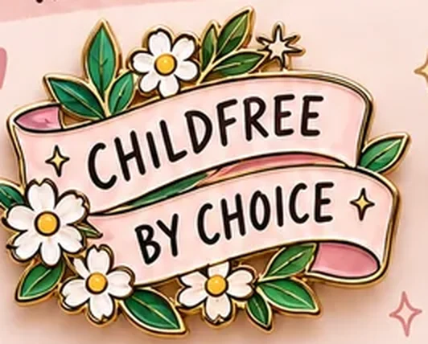

Pin 01Whimsical

Childfree, By Choice
Childfree by choice.
- Mood
- Whimsical / soft rebellion
- Silhouette
- Ribbon banner
- Enamel
- Ivory, blush and garden green on gold plate
A banner holds the longest readable line in the set. Daisies soften the message without weakening it, so the pin reads as a small bouquet first and a statement second.